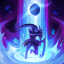

起手裝備
 增幅典籍
增幅典籍
7.3f官方未列此英雄的一般技能／基礎能力調整；本輪按技能與位置需求複核評級、配置及裝備間接影響。
維持 B。月光接突進與範圍大絕適合跟進開戰；突進後難撤，先確認隊友傷害而非單獨衝五人。 條件型選擇；對線、陣容或執行成本較高，不宜當通用首選。
巫妖之禍 → 無限寶珠：前者提供施法後的普攻收益；能安全補普攻才有價值，後者補壓低血線後的收尾。保留五件成裝與獨立鞋線；核心未成形時不把最後一格的保命／穿透能力當成已有。
瞬疾步法：蓄能後以普攻換回復與走位；不是無條件每次施法都回血。其餘選用即刻衝擊、鎖鏈突擊、眼球收集器、絕對專注，依本頁輸出方式與生存需求配套。
閃現＋點燃。閃現優先保留應對致命控制或完成有隊友跟進的擊殺；第二技能依對線用途使用，不替代走位。
本站獨立邏輯複核：以既有手機版技能／裝備／符文資料與已整理的7.3f官方差異推演；本輪不採用外站評級、勝率或推薦配置。 完成策略與配置一致性複核，不等於全部技能逐級數值、傷害計算及所有特殊互動已實測；既有缺證項目仍保留。
巫妖之禍：強化普攻係數與跑速提高；只有能在施法後安全補普攻的英雄才容易兌現收益。
巫妖之禍 → 無限寶珠：前者提供施法後的普攻收益；能安全補普攻才有價值，後者補壓低血線後的收尾。保留五件成裝與獨立鞋線；核心未成形時不把最後一格的保命／穿透能力當成已有。


五件成裝與鞋子分開列示；起手與核心是購買路線，不是額外佔用的成裝欄位。鞋子完成時機仍依對線壓力與回城金錢調整。


瞬疾步法：蓄能後以普攻換回復與走位；不是無條件每次施法都回血。其餘選用即刻衝擊、鎖鏈突擊、眼球收集器、絕對專注，依本頁輸出方式與生存需求配套。

閃現＋點燃。閃現優先保留應對致命控制或完成有隊友跟進的擊殺；第二技能依對線用途使用，不替代走位。
加點優先：Q > W > E
優先 Q > W > E，以月牙衝擊承擔主要循環；初級取點仍依15級表保留完整基本技能，不把主升順序誤認成開局必須連點同一招。
施放技能後短時間提高攻速；每第三次普攻斬擊周圍敵人造成額外魔法傷害，並非只強化固定次數的攻速。
釋放弧形月光造成魔法傷害，命中的敵人會被施加月光，供三技重置使用。
召喚三顆護體法球並獲得護盾，法球碰到敵人時爆炸造成魔法傷害；三顆全部爆炸後護盾會再次增強。
突進到敵人造成魔法傷害並消耗月光；消耗月光時冷卻降至0.5秒，不是完全沒有冷卻。先E再補Q不會追溯刷新已進入的冷卻。

最多蓄力1秒擴大照亮範圍並緩速，期間可移動及施法；結束時依蓄力造成範圍魔法傷害、施加月光與緩速。此技能不把敵人拉到中心。
月光接突進與範圍大絕適合跟進開戰；突進後難撤，先確認隊友傷害而非單獨衝五人。
1技命中月光 → 3技消耗月光 → 2技護盾 → 普攻 → 觀察退路
E吃月光後仍有0.5秒冷卻；第二次E要等就緒且有合法目標，並非隨時能向空地跳走。
1技標記 → 3技進場 → 2技護盾 → 4技蓄力後放開 → 普攻追擊
R蓄力期間可移動與施法，結束造成範圍傷害並施加月光；沒有吸人效果。後續E需冷卻就緒與可選目標。
2技擋傷害 → 1技命中 → 3技吃月光 → 普攻 → 4技蓄力收尾
未標記先E會進正常冷卻；此套先Q再E，避免事後補Q即可重置E的錯誤指示。
以一技弧線同時清兵與標記，命中月光後才用三技換血，保留重置位移作為追擊或撤退。二技護盾最好讓三顆法球都命中，提高第二段護盾價值。
巫妖之禍 → 無限寶珠 → 死亡之帽為預設前三件。巫妖搭配月光進場後的普攻，寶珠帽子維持爆發；沙漏對應蓄力後的集火。
從側翼Q命中後E進場，W擋第一輪傷害，再蓄R擴大覆蓋；R不是聚敵技能。月光與E冷卻就緒後才決定再進場或利用可選目標撤離。
月光接突進與範圍大絕適合跟進開戰；突進後難撤，先確認隊友傷害而非單獨衝五人。 名單僅作機制對位提示；優先看控制是否交掉、兵線／地形與隊友跟進，不宣稱勝率剋制榜。
對局名單是機制與分路判斷，不代表固定勝率；需同時看雙方熟練度、兵線與陣容。
巫妖搭配月光進場後的普攻，寶珠帽子維持爆發；沙漏對應蓄力後的集火。
保留對付W／R控制的距離，不追著E冰爪走進埋伏；她交出自保後再補傷害。
W蓄力時離開嘲諷圈，逼出E後再進場；支援要計入他的R反打。
斜向離開暗黑法球與推球直線，E交出後才接近；不要追過既有球的位置。
依本頁目前五件成裝與鞋線替換；同一格多個建議擇一。先看實際傷害和控制，再決定是否犧牲輸出或保命。
高
觸發：敵方魔防成形時優先百分比穿透；已帶虛空就保留，不因坦克多重複買第二件。
目前配置已包含對應工具；先確認是否能有效使用，不需重複購買。
鞋子更換時需連同三級升級路線一起更換；五件成裝不含鞋，主動裝仍占成裝格。
高
觸發：敵方一輪爆發使你無法完成輸出時，改中婭並保留使用時機；若已配中婭就先調整站位與啟動時間。
目前配置已包含對應工具；先確認是否能有效使用，不需重複購買。
鞋子更換時需連同三級升級路線一起更換；五件成裝不含鞋，主動裝仍占成裝格。
高
觸發：敵方單次關鍵技能先手決定生死時改女妖；護盾被遠程消耗後先退，女妖不是主動解控。
死亡之帽 → 女妖面紗
敵方單次關鍵技能先手決定生死時改女妖；護盾被遠程消耗後先退，女妖不是主動解控。
敵方單次關鍵技能先手決定生死時改女妖；護盾被遠程消耗後先退，女妖不是主動解控。
鞋子更換時需連同三級升級路線一起更換；五件成裝不含鞋，主動裝仍占成裝格。
高
觸發：回復妨礙擊殺且隊友無法穩定重創時，先遺忘寶珠過渡再改黑魔禁書；不要為小額治療過早打散核心。
死亡之帽 → 黑魔禁書
回復妨礙擊殺且隊友無法穩定重創時，先遺忘寶珠過渡再改黑魔禁書；不要為小額治療過早打散核心。
回復妨礙擊殺且隊友無法穩定重創時，先遺忘寶珠過渡再改黑魔禁書；不要為小額治療過早打散核心。
鞋子更換時需連同三級升級路線一起更換；五件成裝不含鞋，主動裝仍占成裝格。
高
觸發：護盾持續擋住主要傷害時改海洋之戟；這是破盾功能，不能替代重創。
死亡之帽 → 水仙三叉戟
護盾持續擋住主要傷害時改海洋之戟；這是破盾功能，不能替代重創。
護盾持續擋住主要傷害時改海洋之戟；這是破盾功能，不能替代重創。
鞋子更換時需連同三級升級路線一起更換；五件成裝不含鞋，主動裝仍占成裝格。
高
觸發：魔法傷害與可被韌性縮短的控制占主導時，整條鞋線改水星之靴→鎖鏈軍靴；韌性不縮短擊飛。
魔力之靴 → 水星之靴
魔法傷害與可被韌性縮短的控制占主導時，整條鞋線改水星之靴→鎖鏈軍靴；韌性不縮短擊飛。
魔法傷害與可被韌性縮短的控制占主導時，整條鞋線改水星之靴→鎖鏈軍靴；韌性不縮短擊飛。
鞋子更換時需連同三級升級路線一起更換；五件成裝不含鞋，主動裝仍占成裝格。
7.3f差異核對：本頁已核對本版官方變動與配置引用；本輪逐份獨立評估Tier與配置，不採外站排行；賽勒斯為保守暫定。未核實的完整成長數值保留註記。查看校正範圍。
本頁校正版本：7.3f；校正日期：2026-11-13。
參考來源標示版本：7.3f（官方差異與既有遊戲資料）
完成策略與配置一致性複核，不等於全部技能逐級數值、傷害計算及所有特殊互動已實測；既有缺證項目仍保留。
評級理由：維持 B。月光接突進與範圍大絕適合跟進開戰；突進後難撤，先確認隊友傷害而非單獨衝五人。 條件型選擇；對線、陣容或執行成本較高，不宜當通用首選。
維持 B。月光接突進與範圍大絕適合跟進開戰；突進後難撤，先確認隊友傷害而非單獨衝五人。 條件型選擇；對線、陣容或執行成本較高，不宜當通用首選。